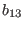
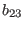
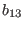
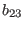
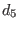
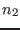
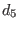
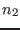

A physically reasonable condition for an explicit second order model
expressed the fact that increasing (non-dimensional) shear
 should lead to increasing vertical shear-anisotropies
of turbulence,  and . It has been shown by
Burchard and
Deleersnijder (2001) that a violation of this condition
may lead to numerical instabilities of the models.
should lead to increasing vertical shear-anisotropies
of turbulence,  and . It has been shown by
Burchard and
Deleersnijder (2001) that a violation of this condition
may lead to numerical instabilities of the models.
Mathematically, the shear-condition is expressed by
where (74) has been used. Using the equilibrium form of the stability
function described in section 4.7.39, this condition leads to a
cubic equation in
 . A simpler condition can
be obtained, when this equation is solved after terms multiplied by
 and , which usually are very small, are neglected.
. A simpler condition can
be obtained, when this equation is solved after terms multiplied by
 and , which usually are very small, are neglected.
The resulting approximate condition is
Burchard and
Deleersnijder (2001) showed that using (83)
the most well-known models yield numerically stable results. However,
for some models like those of Mellor and Yamada (1982) and
Kantha and Clayson (1994), the limiter (83) is
almost always `active', and hence replaces the actual turbulence model in a
questionable way.
Karsten Bolding
2012-01-24